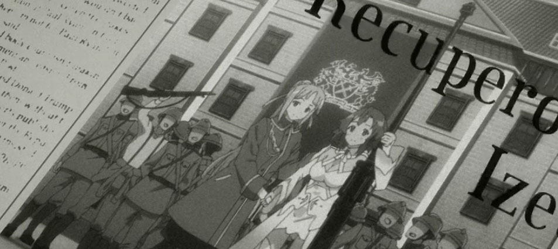
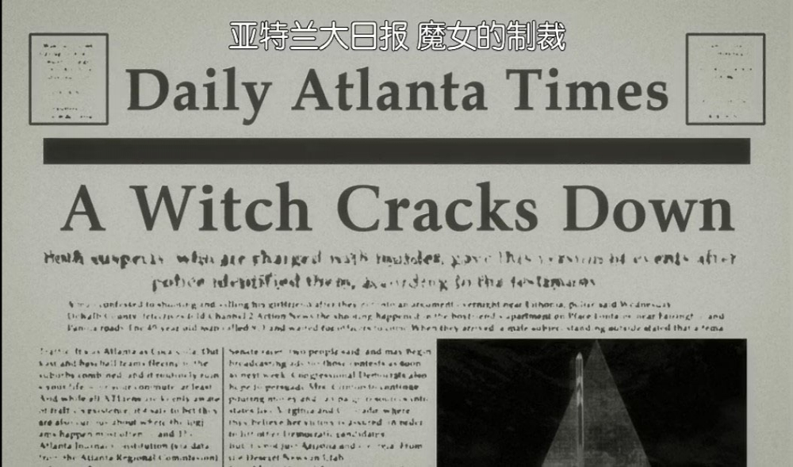
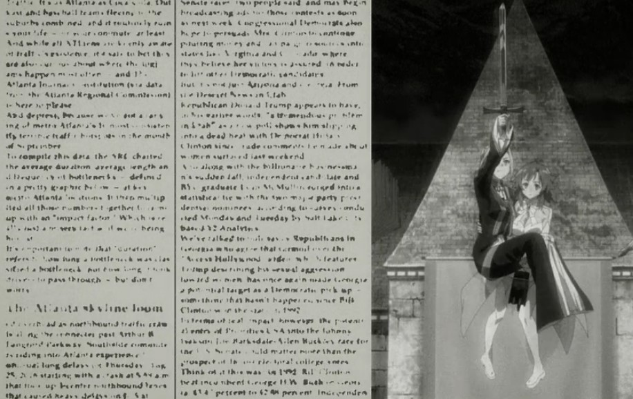
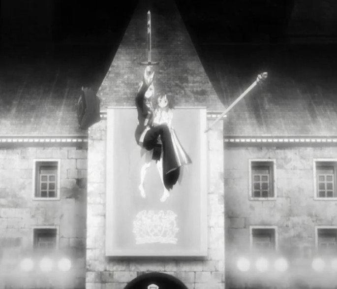

第二百九十四章 凤凰院凶真·中二
“这个就是证据！”
春日将一叠照片拍在桌面上，手在桌上一抹，将其全部排开展示出来，照片上拍摄的是一张张老旧的剪报，有的还附有照片，虽然当初的相机的像素让人遗憾，但是依稀可以识别出上面的主人公都是同一个人——
一个似乎能骑着大枪飞的少女！
“PS？”
月姬看了眼照片然后眨了眨眼睛，报纸看起了有点旧，但是P图高手P一张应该不难吧？就算不考虑现代人弄虚作假哗众取宠，这种像素的黑白照片，就算后面吊一根绳子也没有人能看出来。
“当然不是的了！本团长怎么可能会拿那种掉价的东西！”春日抱着胸仰着头一脸骄傲的样子，“我啊，可是好不容易才找到这个的！”
“这位就是那时候的魔女吗？”小图书管理员拿过一张照片近距离的放在眼前企图从中看出什么，然而，这本来就是老旧剪报残留的情报，被数码相机二次传达，即使是斯克莱亚一族也没办法从里面看出什么，“那个，能弄到原稿吗？”尤诺放下照片看向春日，如果是原件的话，尤诺有自信能看出这个情报的真假。
“啊啊~虽然我也想要原稿，但是很遗憾……”春日摊了摊手。
“这样啊……”尤诺皱起了眉，思索了片刻开口说道，“这个是从哪里来的？”如果可能的话，他想要亲自过去看看。
“威克斯勒学院。”春日回答道，“是阿美利加麻省的一个大学。”
“阿美利加啊……”尤诺不由得有些失望，以他微薄的报酬，完全买不起船票或者飞机票啊，甚至，作为黑户的他，也办理不了护照！
“威克斯勒学院，于一八一三年由当时著名的神秘学家约西亚·威克斯勒所创建，是一所小型文理学院，不过在超自然爱好者的圈子里，那是比较有名的一个追逐人类不可理解事物的学校，学院的创办者兼第一任校长曾经以教学所需为理由收集过大量历史古物，传言他还研究晦涩邪恶的咒语，举行过怪诞堕落的仪式……在威克斯勒离奇死亡后，其继任者曾有心改变学校的神秘热，但那已经作为一种校园文化融入学生以及人们的生活之中。 ”
博学的能称之为大图书馆的有希贴心的为春日做补充说明。
“没错没错！就是那个学校！”春日兴致勃勃的拿出手机，然后点开其中的一段小视频——
“Appareat!Diabolus!lgnis!Appareat!Diabolus!lgnis!Appareat!Diabolus!lgnis!……”
身穿啦啦队服饰的少女们抑扬顿挫的念叨着意义不明的话语。
“……”月姬皱起了眉，这是拉丁语……老实说月姬没有那么学霸的会拉丁语，学精灵语就已经够头疼的了，但是这段话她恰好知道，是当初和班长一起出任务的时候偶然听到的，学霸班长说，那个是拉丁语，原世界的某些人群很喜欢的语言……
“怎么了？月姬姐？”疾风注意到月姬表情的异常疑惑的问道，身为一个普通的国中生，她并不像那些妖孽一样点名满了学习天赋获取学霸成就，完全听不懂视频上抑扬顿挫听起来挺押韵的话的意思。
“不亏是神秘的外国人！你知道他们在念什么吧！”春日也注意道理与其他人茫然的表情不一样的月姬。
“嗯。”月姬点了点头，“那是拉丁语，大意是，【显现吧！恶魔！火焰！】”
“看吧！看吧！看吧！会把这种话作为校训的学校，果然是很奇怪吧！”春日看起了兴致高昂的样子。
“有人做过统计，威克斯勒学院的学生，有五分之一会以为各种原因转学，其中，有一部分人是完全失去了踪迹就如同人间蒸发了一样，不过官方否认了这个说法，果然……”
是谣言吗？
“是当地政府有问题！”
在春日停顿了片刻后，她说出了与众人所想的完全相反方向的结论。
话说，如果真的有这样的事情，住在附近的人也会因为这个学校而感到不安！这个学校也办不下去的吧？
“政府一直掩盖着这些超自然的力量！就像这个！”春日指着桌上的照片打算的说道，说出这样的诽谤一样的话语的少女大概在很多人眼里就如同精神病一样吧，不过幸好现在他们已经不在图书馆的阅览室了，而是被自从尤诺的小图书管理员带到了图书馆的办公区。
万幸，这个小家伙还记得自己的职责，月姬可不想因为这个中二少女被人也当做中二，好羞耻的说。
“亚特兰日报可是当初最具权威的媒体，然而，他们所报道的这种震撼性的消息如今却只有寥寥无几的档案被保存下来，这些是我从雷克论坛上下载的，是由威克斯勒学院的某个学生所上传的在学校图书馆的某本书里找到的剪报。”
啊哈~说到底，也就是网络上的流言程度的消息吧。
月姬暗暗地白了白眼睛。
“现实里怎么可能有魔法啊。”凉子叹了口气无奈的摇摇头说道，虽然不是特别如同凉子的观点，但是，这时候却是对这个中二少女最好的回应。
“说什么傻话呢。”春日用一直莫名的惊讶目光看着凉子，“银座那边不就有个活生生的证据吗！”
活生生啊……
月姬瞄了眼春日，确实呢，仅仅是从普通人的角度，那个门的出现，确实是证实了超自然力量的存在，虽然在一些科学狂眼里，那应该倍称之为未知技术才对。
中二病，在这个世界变得有点奇怪的时代， 或许已经不能称之为中二病，而是一群追逐世界真相的人了呢！
已经这个年纪了，也亏这个女孩能有这样的坚持。
“没错！机关招来了邪恶的爪牙，我们要突破机关的封锁，在机关的特务之前，从那个世界找到拯救世界的钥匙！这是Stein Gate的选择”
不得不说，这个自称凤凰院凶真实际叫做冈部伦太郎也是，难为那么大了还那么中二，比起春日对超自然力量的狂热，这家伙是真中二！嘴里说的机关原以为是指政府或者其他什么组织，但是春日说了，那只是这个有着被害妄想症的家伙虚构的组织而已。
被春日这样的人称为中二，啊啊，真是有够奇怪的。
【是不是很早？今天不想修仙，推倒乱七八糟的事情，先码字更新再说，这个美剧里设定之前就使用过了，就是圣诞节那次，本章节选第二季第四集设定】